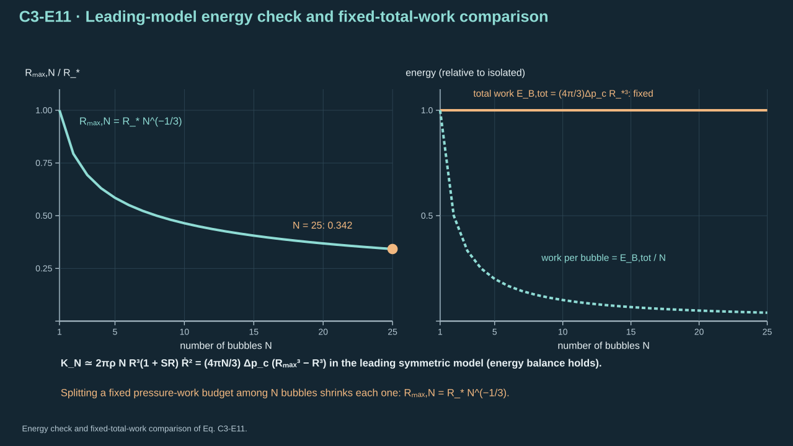

Follow a finite array from cavity motion to emitted jet and receiver pressure. Chapter 2 supplies each site’s heat, PFC inventory and pressure history. Here, mechanical controls use declared source histories. Target PFC maximum speed: Not established. Carrier liquid supplies most moving mass. Cavity pressure, jet speed, surface pressure and buried-interface traction require separate observables.
First fix bubble centers in Cartesian coordinates. Omit translation, gravity, walls, coalescence and shape modes. Require nearly spherical cavities with radius much smaller than separation. Also require low wall Mach and rapid pressure communication. Collapse controls start at maximum radius with zero speed and constant positive driving pressure. PFC pressures require Chapter 2 coupling. The later launch model resolves actual walls, outlets and interfaces. Its liquid-to-gas normal gives positive cylindrical-jet and negative cavity curvature.
Count reproducibility and complete activation are different tests.
数量重复性与全部激活是不同检验。
With 25 independent sites and activation probability 0.95, mean count is 23.75. Relative standard deviation is 4.588%. Complete activation probability is 0.27739. Common heating or mechanical feedback can violate independence. Measure site activation before inferring load symmetry.
An optical condition can be checked before solving cavity mechanics.
求解腔体力学前即可检验光学条件。
Logarithms preserve order; multiplying by minus one reverses it. The allowed decrease lies between zero and one, keeping the denominator positive. A 10% decrease requires beam radius ≥ 4.35688 × array radius. Wider beams improve this fluence uniformity while exposing more surrounding area. Core absorption still requires site-specific calculation.
Step 2 — Derive one spherical source potential. Incompressibility fixes volume flux across concentric spheres. Integrate radial velocity with zero potential at infinity. At a distant bubble, this potential is nearly uniform over its surface. Its fixed-position time derivative gives the leading Bernoulli pressure correction.
A moving spherical volume produces a monopole potential.
运动球体体积产生单极子速度势。
Symbols before Eq. (C3-E04).
式（C3-E04）前的符号定义。
First individual definition第一项单独定义
Second individual definition第二项单独定义
i — Bubble index over the declared activated sources (dimensionless)
i — 遍历声明的已激活源的气泡指标（无量纲）
j — Bubble index over the declared activated sources (dimensionless)
j — 遍历声明的已激活源的气泡指标（无量纲）
pj→i′ is source j's pressure disturbance at i (Pa)
pj→i′ 是源 j 在 i 处的压力扰动（Pa）
pext,i external pressure (Pa)
pext,i 为外压（Pa）
p∞ remote pressure (Pa)
p∞ 为远场压力（Pa）
ρ is constant carrier density (kg m⁻³)
ρ 为恒定载液密度（kg m⁻³）
ϕj is potential (m² s⁻¹)
ϕj 为速度势（m² s⁻¹）
t is time (s), ∂t its fixed-position derivative
t 为时间（s），∂t 为固定位置导数
Rj — Radius of source bubble j (m)
Rj — 源气泡 j 的半径（m）
dij — Bubble-center separation (m)
dij — 气泡中心间距（m）
Nb — Activated-bubble count (dimensionless)
Nb — 已激活气泡数（无量纲）
Conventions and conditions.∑j=i adds all other sources; ≃ marks the leading far-separated approximation; i=j; each index runs from 1 to Nb; Newton dots on a radius denote its time derivatives..
The correction changes surrounding pressure; it is not a new energy reservoir.
该修正改变周围压力，并不增加新的能量库。
The product rule gives both numerator terms. Each term/separation has units m² s⁻²; multiplying density gives pressure. Require small squared-speed, nonuniform-pressure, translation and reflected-field corrections. Positive volume acceleration raises surrounding pressure. Other event stages can reverse the correction. Bremond et al. observed shielding and delayed interior collapse. Their spherical model failed at final jetting. This is an interaction benchmark with different activation conditions. Bremond et al. (2006)
乘积法则给出分子两项。每项除以间距的单位为 m² s⁻²，乘密度得到压力。要求速度平方、非均匀压力、平移及反射场修正较小。正体积加速度提高周围压力，其他事件阶段可反转修正。Bremond 等观测到屏蔽及内部气泡延迟塌缩。其球形模型在最终射流阶段失效。该研究提供不同激活条件下的相互作用基准。Bremond 等（2006）
Symbols before Eq. (C3-E05).
式（C3-E05）前的符号定义。
First individual definition第一项单独定义
Second individual definition第二项单独定义
i — Bubble index over the declared activated sources (dimensionless)
i — 遍历声明的已激活源的气泡指标（无量纲）
j — Bubble index over the declared activated sources (dimensionless)
j — 遍历声明的已激活源的气泡指标（无量纲）
Ri — Radius of bubble i (m)
Ri — 气泡 i 的半径（m）
Rj — Radius of source bubble j (m)
Rj — 源气泡 j 的半径（m）
dij>0 — Bubble-center separation (m)
dij>0 — 气泡中心间距（m）
pb,i is bubble i's internal pressure (Pa)
pb,i 为第 i 个气泡内压（Pa）
p∞ remote pressure (Pa)
p∞ 为远场压力（Pa）
σb is bubble–carrier tension (N m⁻¹)
σb 为泡—载液张力（N m⁻¹）
μ carrier dynamic viscosity (Pa s)
μ 为载液动力黏度（Pa s）
ρ carrier density (kg m⁻³)
ρ 为载液密度（kg m⁻³）
Bi is the isolated radial driving expression (m² s⁻²)
Substitute the corrected external pressure into each radial balance.
将修正外压代入各径向平衡。
Step 3 — Move neighbor pressure to the left in Eq. (C3-E05). The result couples bubble accelerations. Each site retains its own phase-pressure law. Infinite separation removes coupling and recovers the isolated equation. Radius comparable to separation violates the approximation.
Step 4 — Place identical cavities on a regular polygon. Give them identical initial states and pressure histories. Cyclic symmetry equates their neighbor-distance sums and permits a shared radius. Calculate each sum from polygon distances. Pitch means adjacent-vertex distance.
Substitution of the common radius collects the two interaction contributions.
代入共同半径后合并两种相互作用贡献。
Step 5 — Solve on the inward branch. Away from the turning point, express squared speed as a radius function. The chain rule gives its derivative as twice wall acceleration. The linear equation’s integrating factor is radius cubed × interaction factor. Check that choice with the displayed logarithmic derivatives. Extend continuously to zero initial speed.
ℓ∗>0 is an arbitrary constant reference length (m), inserted solely to make the logarithm dimensionless
ℓ∗>0 为任意恒定参考长度（m），仅用来使对数无量纲，并在积分因子中抵消
R˙ — Bubble-wall radial velocity (m s⁻¹)
R˙ — 气泡壁面径向速度（m s⁻¹）
R¨ — Bubble-wall radial acceleration (m s⁻²)
R¨ — 气泡壁面径向加速度（m s⁻²）
Conventions and conditions. it cancels from the integrating factor; ln is natural logarithm; d/dR differentiates in radius; Division by R˙ is used only on the moving branch.
约定与条件。ln 为自然对数；d/dR 对半径求导；仅在运动分支除以 R˙。
(C3-E08) · Chain rule and integrating-factor derivation
ξ is dummy radius (m), dots radius time derivatives
ξ 为积分半径（m），点为半径时间导数
y=R˙2 (m² s⁻²)
y=R˙2（m² s⁻²）
S≥0 neighbor sum (m⁻¹)
S≥0 为邻距和（m⁻¹）
ρ>0 density (kg m⁻³)
ρ>0 为密度（kg m⁻³）
Δpc>0 pressure difference (Pa)
Δpc>0 为压差（Pa）
R˙ — Bubble-wall radial velocity (m s⁻¹)
R˙ — 气泡壁面径向速度（m s⁻¹）
R¨ — Bubble-wall radial acceleration (m s⁻²)
R¨ — 气泡壁面径向加速度（m s⁻²）
Conventions and conditions. Brackets mean upper minus lower endpoint, ∫ definite integration and the nonnegative root; the explicit minus sign selects collapse.
约定与条件。 方括号表示上端减下端，∫ 为定积分， 取非负根；显式负号选择塌缩。
(C3-E09) · Integrated solution on the inward branch
Shared-liquid interaction increases this constrained collapse time.
共享液体相互作用使这一约束塌缩时间增加。
The upper-endpoint singularity is an integrable inverse square root. The differentiated integrand is positive with the same endpoint behavior. This supports differentiation and monotonicity. Zero interaction recovers Rayleigh coefficient 0.9146813565. Use radius 30 μm, pitch 200 μm, density 1000 kg m⁻³ and pressure 100 kPa. Radius/separation is 0.15. These leading-order controls have no certified approximation error.
Step 6 — Include pair terms in shared-liquid energy. Green’s identity converts the interaction integral to the cavity boundary. Liquid-domain outward normal points into the cavity. Outward wall speed gives negative liquid-normal velocity. Two negative boundary factors yield positive cross energy for synchronized motion.
i — Index of the bubble being evaluated (dimensionless)
i — 当前评估气泡的编号（无量纲）
j — Index of a neighboring bubble (dimensionless)
j — 相邻气泡的编号（无量纲）
Ri — Radius of bubble i (m)
Ri — 气泡 i 的半径（m）
Rj — Radius of source bubble j (m)
Rj — 源气泡 j 的半径（m）
ri radial distance from i (m)
ri 为至 i 的径距（m）
dij center separation (m)
dij 为中心间距（m）
R common radius (m)
R 为共同半径（m）
Rmax its initial maximum (m)
Rmax 为其初始最大值（m）
Rmax,N fixed-total-work maximum (m)
Rmax,N 为固定总做功最大半径（m）
R∗ isolated reference radius (all m)
R∗ 为孤立参考半径（均为 m）
bi=Ri2R˙i — Volume-source strength of bubble i (m³ s⁻¹)
bi=Ri2R˙i — 气泡 i 的体积源强度（m³ s⁻¹）
bj=Rj2R˙j — Volume-source strength of bubble j (m³ s⁻¹)
bj=Rj2R˙j — 气泡 j 的体积源强度（m³ s⁻¹）
ϕi — Velocity potential of source bubble i (m² s⁻¹)
ϕi — 源气泡 i 的速度势（m² s⁻¹）
ϕj — Velocity potential of source bubble j (m² s⁻¹)
ϕj — 源气泡 j 的速度势（m² s⁻¹）
Ω liquid domain (—)
Ω 为液体域（—）
Γj bubble boundary (—)
Γj 为泡边界（—）
dV — Volume integration element (m³)
dV — 体积积分微元（m³）
dA — Area integration element (m²)
dA — 面积积分微元（m²）
dri — Radial integration element from center i (m)
dri — 以中心 i 为原点的径向积分微元（m）
S equal reciprocal-distance sum (m⁻¹)
S 为相同距离倒数和（m⁻¹）
ρ density (kg m⁻³)
ρ 为密度（kg m⁻³）
Δpc pressure difference (Pa)
Δpc 为压差（Pa）
EB,tot fixed initial work (J)
EB,tot 为固定初始做功（J）
π dimensionless
π 无量纲
Conventions and conditions. dots are time derivatives; ∇ gradient, ∂n liquid-outward normal derivative; i<j counts each unordered pair once; ∣∣ is vector norm and ∞ the far radial endpoint; Far separation justifies retaining self and leading pair integrals; ∗ labels a reference.
(C3-E11) · Leading-model energy check and fixed-total-work comparison
首阶模型的能量检验与固定总功比较
bi∫Ω∣∇ϕi∣2dV∫Ω∇ϕi⋅∇ϕjdVKNKNEB,tot=Ri2R˙i,ϕi=−bi/ri,KN≃2ρi,j=1∑N∫Ω∇ϕi⋅∇ϕjdV,≃4πbi2∫Ri∞ri−2dri=4πRi3R˙i2,≃∫Γjϕi∂nϕjdA≃(−bi/dij)(−R˙j)4πRj2=dij4πbibj(i=j),≃2πρi∑Ri3R˙i2+4πρi<j∑dijbibj=2πρNR3(1+SR)R˙2,=34πNΔpc(Rmax3−R3)in the leading symmetric model,=N34πΔpcRmax,N3=34πΔpcR∗3,Rmax,N=R∗N−1/3.

The integrated trajectory conserves the leading energy budget.
积分轨迹守恒首阶能量预算。
The inverse-square integral gives reciprocal lower radius. The infinity endpoint vanishes. A distant harmonic source is nearly constant over the emitting surface. Ordered cross terms appear twice; unordered pairs therefore carry coefficient four. Identical sums give bubble count × neighbor sum/2. Inserting Eq. (C3-E09) cancels the interaction factor and recovers pressure work. At fixed total work, take the positive cube root. From isolated radius 30 μm, three, four and five radii become 20.80084, 18.89882 and 17.54411 μm. At 200 μm pitch, times are 2.05687, 1.89946 and 1.77980 μs. Smaller cavities explain the shorter times. Stronger jets and improved optical efficiency remain unestablished.
A center-and-four-arm cross has unequal neighbor sums. With arm length equal to pitch, the center sum is four/pitch. The outer sum is (one + one half + √two)/pitch. Their radii therefore cannot share the same history. Homogenization requires averaging length above pitch and below macroscopic variation length. Volume fraction leaves that separation unresolved.
ϕb is dimensionless instantaneous bubble-volume fraction
ϕb 为无量纲瞬时气泡体积分数
Vi bubble volume (m³)
Vi 为泡体积（m³）
VΩ>0 representative-region volume (m³)
VΩ>0 为代表区体积（m³）
Nb bubble count (dimensionless)
Nb 为泡数（无量纲）
Ri — Radius of bubble i (m)
Ri — 气泡 i 的半径（m）
R — Shared instantaneous bubble radius (m)
R — 共同瞬时气泡半径（m）
s — Nearest-vertex array pitch (m)
s — 阵列相邻顶点间距（m）
π dimensionless
π 无量纲
ϕ(x,t) is weak far-field potential (m² s⁻¹)
ϕ(x,t) 为弱扰动远场势（m² s⁻¹）
p′ pressure disturbance (Pa)
p′ 为压力扰动（Pa）
x observation position (m)
x 为观察位置（m）
t time (s)
t 为时间（s）
ri>0 distance to source i (m)
ri>0 为至源 i 的距离（m）
c sound speed (m s⁻¹)
c 为声速（m s⁻¹）
ρ density (kg m⁻³)
ρ 为密度（kg m⁻³）
t−ri/c is retarded time (s)
t−ri/c 为延迟时间（s）
V˙i — First time derivative of bubble-i volume (m³ s⁻¹)
V˙i — 气泡 i 体积的一阶时间导数（m³ s⁻¹）
V¨i — Second time derivative of bubble-i volume (m³ s⁻²)
V¨i — 气泡 i 体积的二阶时间导数（m³ s⁻²）
i — Index of the bubble being evaluated (dimensionless)
i — 当前评估气泡的编号（无量纲）
Conventions and conditions. Dots on Vi are volume time derivatives (m³ s⁻¹, m³ s⁻²); ∑ sums sources; ≃ is a distant, compact, weak-source approximation.
A spatial sum needs source histories and travel times, not only site count.
空间求和需要源历程及传播时间，不能只给位点数。
Step 7 — Use retarded time for a weak compact source. Differentiate far-field potential at fixed observation position to obtain pressure. Bubble volume fraction differs from initial liquid-PFC loading. A planar array needs layer thickness to define region volume. Coupled source histories must be solved before propagation. At 200 μm and 1480 m s⁻¹, travel time is 0.13514 μs. This is short against 3 μs but can exceed nanosecond pulses. Edges, delay and nonlinear shielding remain relevant.
Step 8 — Resolve liquid shape during meniscus deformation or re-entry. A radius history gives cavity scale and timing. Directional shape requires the spatial domain. During inertial launch, assume inviscid, irrotational, incompressible carrier and introduce a potential. Interfaces are material surfaces in this control. Appreciable evaporation requires Chapter 2’s mass-flux condition.
Conventions and conditions.∇, ∇⋅ and ∇2 are spatial gradient, divergence and Laplacian; the central dot is an actual contraction, not an equation separator.
Conventions and conditions. Arrows indicate the stated far-field limit.
约定与条件。 箭头表示规定远场极限。
(C3-E14) · Kinematic, initial and wall conditions
运动学条件、初始条件与壁面条件
dtdX(Γ,ϕΓ)t=0=u(X,t),Vn=∂nϕ,∂nϕ=Vw⋅non walls,=(Γ0,ϕ0),ϕ→0in a quiescent far field.
A potential equation without initial shape and wall data cannot predict a jet.
无初始形状及壁面数据的势方程无法预测射流。
Symbols before Eq. (C3-E15).
式（C3-E15）前的符号定义。
First individual definition第一项单独定义
Second individual definition第二项单独定义
pl — Interface-liquid pressure (Pa)
pl — 界面液体压力（Pa）
pg — Adjacent gas pressure (Pa)
pg — 邻接气体压力（Pa）
p∞ — Remote carrier pressure (Pa)
p∞ — 远场载液压力（Pa）
σ is the tension appropriate to that interface (N m⁻¹)
σ 为对应界面张力（N m⁻¹）
κ is signed total curvature (m⁻¹), ∇s⋅ surface divergence
κ 为带符号总曲率（m⁻¹），∇s⋅ 为表面散度
n the liquid-to-gas unit normal (dimensionless)
n 为液体指向气体的单位法向（无量纲）
R inner-cavity radius (m)
R 为内部腔体半径（m）
aj exterior-cylinder radius (m)
aj 为外部圆柱半径（m）
ϕΓ — Interface velocity potential (m² s⁻¹)
ϕΓ — 界面速度势（m² s⁻¹）
ϕ — Velocity potential (m² s⁻¹)
ϕ — 速度势（m² s⁻¹）
u velocity (m s⁻¹)
u 为速度（m s⁻¹）
ρ density (kg m⁻³)
ρ 为密度（kg m⁻³）
t time (s)
t 为时间（s）
Conventions and conditions.D/Dt is the material derivative, ∂t fixed-position derivative, ∇ spatial gradient, ∣∣ Euclidean norm; labels cavity and jet select geometries.
Signed curvature and the material derivative keep the dynamic condition consistent.
带符号曲率及材料导数使动力学条件自洽。
Step 9 — Apply normal stress in Eq. (C3-E15). Eulerian Bernoulli gives minus half squared speed. Converting to the material derivative adds squared speed, leaving plus half. For a sphere, wall potential is minus radius × wall speed. Its derivative recovers the spherical balance with capillary resistance. The shown gauge uses a quiescent reservoir. Sealed cells need their actual pressure–volume boundary and gauge. Solve the harmonic problem and advance shape and potential. Stop that stage when topology or compressibility changes its assumptions. Distinguish internal re-entry from exterior emission. Peters et al. resolve the free surface explicitly. [R4]
Π(x) — Local pressure impulse per unit area (Pa s)
Π(x) — 局部单位面积压力冲量（Pa s）
Π0 — Driven-end pressure impulse (Pa s)
Π0 — 驱动端压力冲量（Pa s）
p — Local liquid pressure (Pa)
p — 局部液体压力（Pa）
pref — Specified reference pressure (Pa)
pref — 指定参考压力（Pa）
x position (m)
x 为位置（m）
t — Time (s)
t — 时间（s）
t0 — Pulse start time (s)
t0 — 脉冲开始时刻（s）
τp>0 — Pressure-pulse duration (s)
τp>0 — 压力脉冲时长（s）
Δu velocity increment (m s⁻¹)
Δu 为速度增量（m s⁻¹）
U column speed (m s⁻¹)
U 为液柱速度（m s⁻¹）
ρ>0 density (kg m⁻³)
ρ>0 为密度（kg m⁻³）
z∈[0,L] axial coordinate (m)
z∈[0,L] 为轴坐标（m）
L>0 length (m)
L>0 为长度（m）
A>0 area (m²)
A>0 为面积（m²）
m>0 liquid mass (kg)
m>0 为液体质量（kg）
J is total directional force impulse (N s)
J 为总方向力冲量（N s）
Ekinetic energy (J)
E 为动能（J）
Conventions and conditions.∇,∇2 are gradient/Laplacian; ∫ time integration and vertical bars denote a stated fixed-budget branch; The pulse approximation freezes geometry and neglects integrated convection and viscosity.
The pressure-impulse field and the total energy constraint must be compatible.
压力冲量场必须与总能量约束相容。
Step 10 — Integrate short-pulse momentum and take divergence. The column obeys endpoint impulses and impermeable sidewalls. Its impulse gradient sets initial speed. Smaller area at fixed impulse/area leaves speed unchanged. Quartering mass at fixed total impulse quadruples speed and required energy. At fixed energy, speed doubles and momentum halves. Meniscus focusing therefore needs an energy budget as well as continuity. Fixed geometry requires small pulse displacement and viscous corrections. Acoustic crossings alone leave those conditions unresolved. [R2]
α — Jet-to-inlet cross-sectional area ratio (dimensionless)
α — 射流截面积与入口截面积之比（无量纲）
pin — Tube-inlet pressure (Pa)
pin — 管入口压力（Pa）
pg — Adjacent gas pressure (Pa)
pg — 邻接气体压力（Pa）
Δploss≥0 prescribed loss (Pa)
Δploss≥0 为给定损失（Pa）
ρ>0 density (kg m⁻³)
ρ>0 为密度（kg m⁻³）
σjjet–gas tension (N m⁻¹)
σj 为射流—气体张力（N m⁻¹）
π dimensionless
π 无量纲
aj — Exterior cylindrical-jet radius (m)
aj — 外部圆柱射流半径（m）
Conventions and conditions. The square root requires nonnegative numerator; This is a steady inviscid-core nozzle control with optional loss, not a transient cavity solution; ain>aj>0; α=(aj/ain)2 and 0<α<1..
Specify either source pressure or flow and solve the compatible remaining quantity.
指定源压力或流量，再求其余相容量。
Use inlet radius 40 μm, outlet radius 10 μm and inlet speed 3 m s⁻¹. Continuity gives outlet speed 48 m s⁻¹. With density 1000 kg m⁻³, tension 0.072 N m⁻¹ and zero loss, overpressure must be 1.1547 MPa. This comprises 1.1475 MPa kinetic increase plus 7.2 kPa capillarity. Fixing overpressure at 0.20 MPa instead gives outlet speed 19.6752 m s⁻¹ and inlet speed 1.22970 m s⁻¹. The original speed with the lower pressure violates the budget. Meniscus evolution still requires Eqs. (C3-E13–15).
采用入口半径 40 μm、出口半径 10 μm、入口速率 3 m s⁻¹。连续性给出出口速率 48 m s⁻¹。密度 1000 kg m⁻³、张力 0.072 N m⁻¹、零损失时，所需过压为 1.1547 MPa，包括 1.1475 MPa 动能增加及 7.2 kPa 毛细压力。改为固定过压 0.20 MPa 时，出口速率为 19.6752 m s⁻¹、入口速率为 1.22970 m s⁻¹。原入口速率与较低压力同时指定会违反预算。弯月面演化仍需式（C3-E13–15）。
Finite jet mass converts an energy budget into a meaningful speed and momentum bound.
有限射流质量将能量预算转化为有意义的速度及动量界。
Step 11 — Apply Cauchy–Schwarz to mass and axial velocity. Bound axial velocity squared by total speed squared. Equality requires uniform speed along the chosen axis. Energy/mass has units m² s⁻². Momentum² and mass × energy share units kg² m² s⁻². The same proof applies to total emitted mass and energy. Lateral flow, opposing jets or tiny fast tips can reduce useful axial momentum.
步骤 11——对质量与轴向速度应用柯西—施瓦茨不等式。用总速率平方界定轴向速度平方。等号要求沿所选轴统一速率。能量／质量单位为 m² s⁻²。动量平方与质量 × 能量均为 kg² m² s⁻²。同一证明适用于总喷出质量与能量。侧向流、相反射流或微小高速前端可降低有用轴向动量。
5. Slender-jet transport and stability
5. 细射流输运与稳定性
Step 12 — Model an axisymmetric Newtonian jet after launch. Assume negligible surrounding gas, constant density and tension, zero gravity and mass exchange. Radius and axial velocity vary along flight. Integrate area over a fixed slice for exact mass conservation. Divide by positive slice length and take its limit for differentiable fields. Substitute area = π × radius², then divide by positive 2π × radius. Supply initial shape, velocity, inflow and end conditions from the launch model or measurements. Strongly two-dimensional startup necks exceed this approximation.
v(z,t) cross-sectional average axial velocity (m s⁻¹)
v(z,t) 为截面平均轴速（m s⁻¹）
π dimensionless
π 无量纲
[Av] denotes the volume flux (m³ s⁻¹) evaluated at the stated end
[Av] 表示在指定端点评价的体积流率（m³ s⁻¹）
dξ — Integration-coordinate element (m)
dξ — 积分坐标微元（m）
Conventions and conditions.∂t,∂z are fixed-coordinate derivatives; ∫ integrates over the slice; the differential limit requires differentiable fields; The last step divides by positive 2πa.
Axial stretching changes radius even before capillary necking grows.
在毛细颈缩增长前，轴向拉伸即会改变半径。
Symbols before Eq. (C3-E20).
式（C3-E20）前的符号定义。
First individual definition第一项单独定义
Second individual definition第二项单独定义
r∈[0,a] — Radial position measured from the liquid-jet axis (m)
r∈[0,a] — 从液体射流轴线计量的径向位置（m）
z — Axial liquid-jet coordinate (m)
z — 液体射流轴向坐标（m）
t time (s)
t 为时间（s）
ur is radial (m s⁻¹)
ur 为径向（m s⁻¹）
v axial velocity (m s⁻¹)
v 为轴向速度（m s⁻¹）
a>0 radius (m)
a>0 为半径（m）
A=πa2 area (m²)
A=πa2 为面积（m²）
ρ is density (kg m⁻³)
ρ 为密度（kg m⁻³）
μ Newtonian viscosity (Pa s)
μ 为 Newton 黏度（Pa s）
σjjet–gas tension (N m⁻¹)
σj 为射流—气体张力（N m⁻¹）
τzz — Axial viscous normal stress (Pa)
τzz — 轴向黏性法向应力（Pa）
τrr — Radial viscous normal stress (Pa)
τrr — 径向黏性法向应力（Pa）
κ is outward liquid-to-gas curvature (m⁻¹)
κ 为液体朝气体外法向曲率（m⁻¹）
Conventions and conditions.∂r,∂z,∂t are partial derivatives; ∂zz is a second axial derivative; The axial momentum law is a slender approximation although the geometric curvature is retained in full.
The factor three follows from extensional stress, rather than ordinary shear drag.
因子三来自拉伸应力，而不是普通剪切阻力。
Step 13 — Integrate radial continuity with axis regularity. Insert the radial derivative into Newtonian stresses. Axial minus radial stress gives extensional factor three. Normal stress removes radial stress from pressure. The remaining axial force contains extension and capillary gradient. Divide by mass/length for Eq. (C3-E20). Each acceleration term has units m s⁻². Constant radius and speed give zero acceleration. Axial strain changes radius through Eq. (C3-E19). Eggers and Dupont establish the reduced model and dissipation. Exact curvature still leaves a reduced momentum equation. [R14]
步骤 13——结合轴线正则性积分径向连续方程。将径向导数代入牛顿应力。轴向减径向应力给出拉伸系数三。法向应力从压力中消去径向应力。剩余轴向力包含拉伸及毛细梯度。除以单位长度质量，得到式（C3-E20）。各加速度项单位均为 m s⁻²。恒定半径和速率给出零加速度。轴向应变通过式（C3-E19）改变半径。Eggers 与 Dupont 建立了约化模型及耗散。采用精确曲率仍属于约化动量方程。 [R14]
Symbols before Eq. (C3-E21).
式（C3-E21）前的符号定义。
First individual definition第一项单独定义
Second individual definition第二项单独定义
a is perturbed radius (m)
a 为扰动半径（m）
a0>0 base-cylinder radius (m)
a0>0 为基态圆柱半径（m）
δ0 — Initial small radius-disturbance amplitude (m)
δ0 — 初始微小半径扰动振幅（m）
δ(t) — Time-dependent small radius-disturbance amplitude (m)
δ(t) — 随时间变化的微小半径扰动振幅（m）
z — Axial liquid-column or jet position (m)
z — 液柱或射流的轴向位置（m）
r — Radial position measured from the liquid-jet axis (m)
r — 从液体射流轴线计量的径向位置（m）
t time (s)
t 为时间（s）
Uj base axial speed (m s⁻¹)
Uj 为基态轴速（m s⁻¹）
k>0 wavenumber (m⁻¹)
k>0 为波数（m⁻¹）
κ is curvature (m⁻¹)
κ 为曲率（m⁻¹）
ψ perturbation potential (m² s⁻¹)
ψ 为扰动势（m² s⁻¹）
B=0 its amplitude (m² s⁻¹)
B=0 为其振幅（m² s⁻¹）
g>0 — Positive temporal growth rate, not gravitational acceleration (s⁻¹)
g>0 — 正的时间增长率，并非重力加速度（s⁻¹）
I0 — Modified Bessel function of order zero (dimensionless)
I0 — 零阶修正贝塞尔函数（无量纲）
I1 — Modified Bessel function of order one (dimensionless)
I1 — 一阶修正贝塞尔函数（无量纲）
q dimensionless wavenumber
q 为无量纲波数
ρ density (kg m⁻³)
ρ 为密度（kg m⁻³）
σj tension (N m⁻¹)
σj 为张力（N m⁻¹）
Conventions and conditions.g does not denote gravity in this chapter; cosine and exponential have dimensionless arguments; This inviscid infinite-cylinder linear control neglects surrounding-gas dynamics; 0<δ0≤δ(t)≪a0 defines the small-disturbance regime..
约定与条件。 本章 g 不表示重力；余弦及指数自变量无量纲；该无黏无限圆柱线性对照忽略周围气体动力学；0<δ0≤δ(t)≪a0 定义微小扰动范围。。
tlin — Time to the selected small linear threshold (s)
tlin — 达到选定微小线性阈值的时间（s）
tflight — Jet flight time (s)
tflight — 射流飞行时间（s）
ρ density (kg m⁻³)
ρ 为密度（kg m⁻³）
a0 — Base-cylinder radius (m)
a0 — 基态圆柱半径（m）
dj — Jet diameter (m)
dj — 射流直径（m）
H — Liquid-jet flight gap (m)
H — 液体射流飞行间隙（m）
σj tension (N m⁻¹)
σj 为张力（N m⁻¹）
μviscosity (Pa s)
μ 为黏度（Pa s）
Uj>0 uniform speed (m s⁻¹)
Uj>0 为均匀速度（m s⁻¹）
gmax>0 fastest inviscid growth rate (s⁻¹)
gmax>0 为最快无黏增长率（s⁻¹）
λmax its wavelength (m)
λmax 为其波长（m）
δ0 — Initial small radius-disturbance amplitude (m)
δ0 — 初始微小半径扰动振幅（m）
δarr arrival amplitude (m)
δarr 为到达振幅（m）
π dimensionless
π 无量纲
Rej — Diameter-based jetReynolds number (dimensionless)
Rej — 以直径定义的射流雷诺数（无量纲）
Wej — Diameter-based jetWeber number (dimensionless)
Wej — 以直径定义的射流韦伯数（无量纲）
Ohj — Diameter-based jetOhnesorge number (dimensionless)
Ohj — 以直径定义的射流奥内佐格数（无量纲）
δcrit — Chosen small linear-response threshold amplitude (m)
δcrit — 选定的微小线性响应阈值振幅（m）
Conventions and conditions.ln,exp are natural logarithm/exponential; Constant base state and a sufficiently long cylinder are assumed for growth; δ0<δcrit≪a0; the chosen threshold remains within linear theory..
Compare growth during actual flight against a declared small-amplitude threshold.
比较实际飞行期间增长与明确的小振幅阈值。
Step 15 — Solve exponential growth for a small threshold. Capillary-time² has units kg/(kg s⁻²) = s². Growth vanishes at zero tension and wavenumber endpoints zero and one. A 0.1-radius threshold marks a chosen linearity limit. Extrapolation to full radius gives 17.7 μs in the example. Exact breakup time remains unestablished. A 50 μm jet spans about one fastest wavelength. Finite ends and startup therefore matter. Stretching needs evolving disturbance histories; dense surrounding liquid needs two-fluid stability. Large Weber number leaves coherent arrival unresolved.
Step 16 — Separate impact regimes. Steady redirection gives momentum-flux force when outgoing axial momentum vanishes. Initial contact compresses both media and launches waves. Both derive from the same finite incoming jet. Count the load consistently through time. Positive normal velocity points into the stationary receiver. Compressive pressure is excess over precontact pressure.
Steady force follows from momentum flux, rather than assigning dynamic pressure everywhere.
稳态力来自动量流率，而非将动压指定至全部表面。
Symbols before Eq. (C3-E24).
式（C3-E24）前的符号定义。
First individual definition第一项单独定义
Second individual definition第二项单独定义
u is liquid normal velocity (m s⁻¹)
u 为液体法向速度（m s⁻¹）
Uj its initial incident speed (m s⁻¹)
Uj 为初始入射速度（m s⁻¹）
vi common contact velocity (m s⁻¹)
vi 为共同接触速度（m s⁻¹）
p′ is linear compressive pressure disturbance (Pa)
p′ 为线性压缩压力扰动（Pa）
pearly contact value (Pa)
pearly 为接触值（Pa）
ρ is liquid density (kg m⁻³)
ρ 为液体密度（kg m⁻³）
c liquid longitudinal sound speed (m s⁻¹)
c 为液体纵向声速（m s⁻¹）
Zl=ρc>0 liquid (Pa s m⁻¹)
Zl=ρc>0 为液体阻抗（Pa s m⁻¹）
Zr>0 receiver longitudinal impedance (Pa s m⁻¹)
Zr>0 为接收体纵向阻抗（Pa s m⁻¹）
z is normal coordinate (m)
z 为法向坐标（m）
t — Time (s)
t — 时间（s）
Conventions and conditions. The two differential operators follow right/left characteristics; Both media are locally semi-infinite and initially unpressurized relative to the same contact reference; the receiver is initially at rest.
Pressure continuity and equal normal velocity determine the early contact state.
压力连续及相同法向速度确定早期接触状态。
Step 17 — Insert momentum and compression equations into the characteristic derivatives. Pressure and velocity gradients cancel. The upstream liquid wave slows flow to contact velocity. Pressure equals impedance × speed reduction. The receiver wave begins from rest. Match pressure and divide by summed positive impedances. Infinite receiver impedance gives zero contact speed and pressure = density × sound speed × incident speed. Zero receiver impedance gives zero pressure. These limits check compliance and signs. MIT continuum acoustics
τeq is an impulse-equivalent duration (s) for a fictitious uniform rigid-contact rectangle with zero outgoing axial momentum
τeq 为出射轴向动量为零时，假想均匀刚性接触矩形载荷的冲量等效时长（s）
tside — Side-release time (s)
tside — 侧向释放时间（s）
taxial — Axial-release time (s)
taxial — 轴向释放时间（s）
tearly — Early observation time (s)
tearly — 早期观察时间（s）
treturn — First receiver-return time (s)
treturn — 首个接收体回波时间（s）
Conventions and conditions. The liquid momentum balance excludes additional direct source forces or a separate collapse shock; receiver support reactions affect receiver motion but are not counted as a second direct liquid impulse; min selects the earliest.
A very large initial pressure has a finite momentum budget and restricted duration.
很大的初始压力仍受有限动量预算及持续时间限制。
Step 18 — Integrate receiver force over the full event. Zero outgoing axial momentum gives stopping impulse. Divide it by full-area water-hammer force for an equivalent duration. A rectangular trace remains unestablished. One-dimensional pressure requires observation before lateral release and receiver reflections. Thin-film bending needs its own response. Rebound increases momentum change. Extra source work or collapse waves require separate balances.
pobs is signed area–time mean excess pressure (Pa)
pobs 为带符号面积—时间平均超压（Pa）
p local pressure (Pa)
p 为局部压力（Pa）
pref fixed reference (Pa)
pref 为固定参考值（Pa）
x position (m)
x 为位置（m）
t current time (s)
t 为当前时间（s）
ξ — Dummy time in the pressure-observation integral (s)
ξ — 压力观察积分中的时间哑变量（s）
Ao>0 is the fixed observer area (m²)
Ao>0 为固定观察面积（m²）
τo>0 averaging duration (s)
τo>0 为平均时长（s）
dA area element (m²)
dA 为面积微元（m²）
Jrec≥0 total compressive normal impulse over the observed footprint (N s)
Jrec≥0 为观察载荷区域上的总法向压缩冲量（N s）
Conventions and conditions. Integrals sum the area and preceding time window; The bound assumes negligible normal viscous stress, so excess pressure equals compressive normal traction; this excess must be nonnegative throughout the full-event footprint budget, with no omitted forces; An arbitrary signed waveform, finite normal viscous stress or a different interface does not satisfy these premises.
A reported maximum is meaningful only for an unchanged observer.
仅在观察定义不变时，报告的最大值才具有可比较含义。
Symbols before Eq. (C3-E27).
式（C3-E27）前的符号定义。
First individual definition第一项单独定义
Second individual definition第二项单独定义
Ew is outgoing linear plane-wave energy crossing the stated footprint/window (J)
Ew 为通过规定面积／时间窗口的单向线性平面波能量（J）
p′ its pressure disturbance (Pa)
p′ 为其压力扰动（Pa）
p signed area–time mean (Pa)
p 为带符号面积—时间均值（Pa）
Zl>0 constant wave impedance (Pa s m⁻¹)
Zl>0 为恒定波阻抗（Pa s m⁻¹）
Ao>0 area (m²)
Ao>0 为面积（m²）
τo>0 duration (s)
τo>0 为时长（s）
t time (s)
t 为时间（s）
dA area element (m²)
dA 为面积微元（m²）
Conventions and conditions.∫ is area/time integration and ∣∣ magnitude; The premise is one-way linear pressure–velocity relation u′=p′/Zl, so intensity is p′2/Zl; This is not an energy bound on arbitrary standing-wave or solid contact traction.
Finite area and time prevent an unmeasured point spike from standing in for delivered loading.
有限面积及时间避免用未测量点尖峰代替实际传递载荷。
Step 19 — Bound nonnegative load in a subwindow by full impulse. This gives Eq. (C3-E26). For a one-way linear wave, apply Cauchy–Schwarz over area × duration. Insert wave energy for Eq. (C3-E27). Keep these different assumptions with their bounds. Smaller windows or areas can raise averages at fixed energy. Pointwise mesh spikes leave measured maxima unestablished. Single-shot and repeatable intact-transfer maxima need separate admissible conditions.
Strong compression requires conservative evolution with an appropriate equation of state.
强压缩需要采用适当状态方程的守恒演化。
Step 20 — Restore compressible conservation at appreciable Mach number. Conserve mass, momentum and total energy. Include pressure and viscoustraction in momentum flux. Energy flux contains pressure work, viscous work and heat. Count optical heating once. Close species, phase jumps, material laws and solid response. Inherit source and incoming-jet states consistently. Sound speed flags model refinement. Universal jet-speed ceiling: Not established. Missing: source conversion, geometry, inventories, damage limits and observer. [R5]
Prescribe 25 separate cells in a 5 × 5 pattern at 200 μm pitch. Each contains Chapter 2’s PFP teaching inventory and 50 pL carrier. Equal allocation assumes ideal patterned/addressed illumination and stipulated interception. This differs from the broad Gaussian control. The polygon interaction solution does not multiply these separate-cell pressures. The 5 μm core is a teaching input.
Step 21 — Allocate optical energy before assuming conversion. Incident energy is 25 μJ, interception 0.8 and absorptance 0.5. Equal allocation gives 400 nJ absorbed/site. Assume 40% reaches PFC by the activation deadline. The resulting 160 nJ exceeds the 97.82 nJ preparation screen. Uniform temperature and onset timing remain unestablished. Separately assume final jet energy is 0.5% of absorbed energy. Thermal and kinetic fractions track successive transfers of the same energy.
The finite state carried to Chapter 4 includes mass and energy, not only a pressure peak.
传入第四章的有限状态包含质量及能量，而非只有压力峰值。
Checked quantity
已核验量
Result
结果
Interpretation
解释
Emitted volume per site
各位点喷出体积
3.926991 pL
3.926991 pL
Below the 50-pL carrier inventory
小于 50 pL 载液储量
Total emitted mass
总喷出质量
98.17477 ng
98.17477 ng
25 independent finite jets
25 个独立有限射流
Emission duration estimate
发射时长估计
1.566643 μs
1.566643 μs
Length divided by assigned uniform speed
长度除以给定均匀速度
Flight across 100 μm air gap
飞越 100 μm 气隙
3.133285 μs
3.133285 μs
No dense-liquid drag assumed
假设无稠密液体阻力
Impulse-equivalent early duration
冲量等效早期时长
33.78378 ns
33.78378 ns
Not a predicted rectangular pulse
并非预测矩形脉冲
Side-release scale
侧向释放尺度
3.378378 ns
3.378378 ns
Central 1D impact requires still earlier observation
中心一维冲击要求更早观察
Reynolds / Weber / Ohnesorge
Reynolds／Weber／Ohnesorge 数
319.1538 / 141.4711 / 0.0372678
319.1538 / 141.4711 / 0.0372678
Diameter-based diagnostics
以直径定义的诊断量
Capillary time / fastest wavelength
毛细时间／最快波长
1.317616 μs / 45.07184 μm
1.317616 μs／45.07184 μm
Radius-based infinite-cylinder benchmark
以半径定义的无限圆柱对照
Arrival disturbance from 1% initial amplitude
初始 1% 振幅的到达扰动
2.26247% of radius
半径的 2.26247%
Linear control permits coherent arrival
线性对照允许相干到达
1% to 10% radius linear-threshold time
半径 1% 到 10% 的线性阈值时间
8.836529 μs
8.836529 μs
A declared validity screen, not pinch-off time
声明的适用性筛查，并非夹断时间
Formal extrapolation from 1% to full radius
1% 到整个半径的形式外推
17.67306 μs
17.67306 μs
Reproduces source estimate outside linear validity
还原原文估计，但超出线性适用范围
Properties and efficiencies are stipulated water-like teaching inputs. The 47.2348 MPa value is an early rigid-contact scale. Its spatial validity lasts nanoseconds. Sustaining it over 1.5666 μs requires 46.37 times available axial momentum. Energy stays 2.00 nJ/site and 50.0 nJ total. Chapter 4 tests opening work along the actual force path. High initial pressure can coexist with insufficient fracture work.
R¨i — Wall radial acceleration of bubble i (m s⁻²)
R¨i — 气泡 i 的壁面径向加速度（m s⁻²）
Conventions and conditions.∗ reference label; The coupled row requires far separation; the fixed-work row assumes identical constant-pressure ideal cavities.
约定与条件。∗ 为参考标签；耦合行要求充分分离；固定做功行假设相同恒定压力理想腔体。
(C3-E31) · Reference answer: original interaction and allocation formulas
Use connectivity and source allocation before any sum of outputs.
求和输出前先确定液体连通性及源分配。
Check core size, carrier supply, pitch, fluence and activation time separately. Identify hydraulic separation. For separate cells, sum calculated jet energies and aligned momenta. Pressure stays local unless fields overlap at a defined observer. For connected bubbles, solve coupled source histories and liquid inertia. Regular spacing leaves edges and failed activation relevant. Polygon controls delay collapse at fixed radius. Fixed-total-work controls shrink radii as count increases. Count-proportional useful pressure remains unestablished.
Twenty-five independent sites at probability 0.95 all activate in 27.7% of shots. Measure each site’s activation and arrival delay. Preserve the common energy budget during propagation. Contact, coalescence, distortion and strong waves exceed the monopole model. Its analytic table supplies a conditional control.
Speed, focusing and survival must refer to the same emitted liquid state.
速度、聚焦及存活须指向同一喷出液体状态。
Jet shape requires interfaces, source pressure, walls, outlets and energy balance. Fixed impulse and fixed energy impose different focusing limits. Quartering mass at fixed impulse quadruples speed and energy demand. At fixed energy it doubles speed and halves momentum. Report tip speed, finite mass, mass-weighted speed, axial momentum and energy separately.
Use slender-jet balances after launch. Compare disturbance growth with actual flight duration. In the example, a 1% disturbance grows to 2.26% during 3.133 μs. This supports coherent arrival within the cylinder approximation. The 17.7 μs extrapolation leaves exact breakup unresolved. Finite ends, startup, stretch, viscosity and surrounding liquid can change survival. Measure shape and delivered mass through time.
Explains why spatial interface geometry and source/wall conditions are required for a directional emitted jet.
解释定向喷出射流为什么需要空间界面几何及源／壁面条件。
Separates fixed impulse, fixed energy and fixed impulse per area; connects finite mass to speed, momentum and focusing cost.
区分固定冲量、固定能量及固定单位面积冲量，将有限质量联系至速度、动量及聚焦代价。
Uses flight-time versus disturbance-growth reasoning and acknowledges nonlinear/finite-length breakdown instead of guaranteeing breakup-free arrival.
用飞行时间与扰动增长推理，并承认非线性／有限长度失效，避免保证无断裂到达。
A 47 MPa initial impact fails transfer. Explain the budget and observer.
47 MPa 初始撞击未实现转印。解释预算及观测条件。
Explain the mechanism, assumptions, and limits in your own words.
用自己的话解释机制、假设与限制。
Reference answer and mastery criteria参考答案与掌握标准
Symbols before Eq. (C3-E33).
式（C3-E33）前的符号定义。
First individual definition第一项单独定义
Second individual definition第二项单独定义
pearly is early compressive impact scale (Pa)
pearly 为早期压缩冲击尺度（Pa）
pobs signed finite-observer mean (Pa)
pobs 为带符号有限观察均值（Pa）
Zl — Liquid longitudinal wave impedance (Pa s m⁻¹)
Zl — 液体纵向波阻抗（Pa s m⁻¹）
Zr>0 — Receiver longitudinal wave impedance (Pa s m⁻¹)
Zr>0 — 接收体纵向波阻抗（Pa s m⁻¹）
ρ carrier density (kg m⁻³)
ρ 为载液密度（kg m⁻³）
c sound speed (m s⁻¹)
c 为声速（m s⁻¹）
Uj incident speed (m s⁻¹)
Uj 为入射速度（m s⁻¹）
Lj finite jet length (m)
Lj 为有限射流长度（m）
τeq rigid stopping-impulse equivalent duration (s)
τeq 为刚性停止冲量等效时长（s）
Ao observation area (m²)
Ao 为观察面积（m²）
dA element (m²)
dA 为面积微元（m²）
τo averaging duration (s)
τo 为平均时长（s）
t current time (s)
t 为当前时间（s）
ξ — Dummy time in the pressure-observation integral (s)
ξ — 压力观察积分中的时间哑变量（s）
p — Local liquid pressure (Pa)
p — 局部液体压力（Pa）
pref — Specified reference pressure (Pa)
pref — 指定参考压力（Pa）
x — Spatial observation position (m)
x — 空间观察位置（m）
Conventions and conditions.∫ integrates local pressure p(x,ξ) over the footprint/window, with position x (m) implicit; Impact is locally one-dimensional and linear; equivalent duration assumes zero outgoing axial momentum and no added force source.
A finite impact scale is an input to load-path analysis, not proof of intact release.
有限冲击尺度是传力路径分析的输入，并非完整释放的证明。
Initial rigid-contact compression gives the 47.2348 MPa scale. Per-jet incoming state is 3.92699 ng, 2 nJ and 1.25331 × 10⁻¹⁰ N s. Equivalent full-area duration is 33.78 ns. Lateral release begins on about 3.38 ns. Resolve actual pressure and receiver response. Specify location, reference, footprint, bandwidth and averaging interval. Check momentum and energy against that same incoming state.
Chapter 4 transmits loads through the liquid/film/PVC path. It tests interface strength, fracture work and payload damage. A 50 nJ jet budget may fail release despite high initial pressure. A maximum requires optical damage limits, PFC and carrier supply, geometry, finite mass and observer. Report verified single shots separately from repeatable intact transfer. Universal maximum: Not established.
Distinguishes dynamic pressure, early impedance pressure, finite observed pressure and buried-interface opening traction.
区分动压、早期阻抗压力、有限观察压力及埋藏界面张开牵引。
Explains finite mass/energy/impulse and duration, retaining the exact 25-cell state for fracture analysis.
解释有限质量／能量／冲量及持续时间，并保留明确的 25 单元状态用于断裂分析。
Defines the observer and operating constraints, separates single-shot output from repeatable intact transfer, and identifies unresolved geometry/material evidence.
定义观察量及运行约束，分开单次输出与可重复完整转印，并指出尚缺的几何／材料证据。
Submit your three answers
提交三个回答
Answer in your own words, in either language. Paste your answers into the teaching chat. Review covers reasoning, assumptions, and limits. All three accepted answers establish chapter mastery.